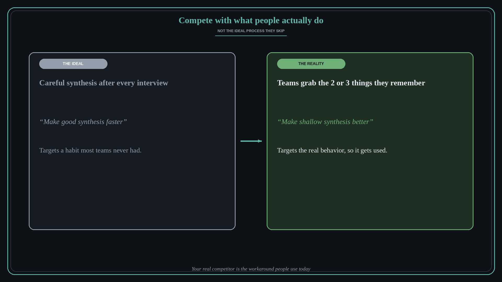

Compete with what people actually do
Source: Teresa Torres (@ttorres)
original post
What it claims
Teresa Torres wanted to believe product teams do careful synthesis after every customer interview. In reality it is hard, so teams give up and grab the two or three things they remember most. Her realization: “We're not competing with making good synthesis faster. We're competing with making shallow synthesis better.” That reshaped the product approach.
Why it matters for a PO
POs often design for the ideal workflow users should follow, then wonder why adoption is low. The real competitor is the shortcut people use today. Framing the problem around actual behavior, rather than the best-practice version, leads to solutions people will really pick up.
3 takeaways
- Find out what users actually do today, not what they say they should do.
- Your real competitor is the workaround or shortcut, not the ideal process.
- Design to improve the real behavior a little, rather than demand the ideal one.
Practice this week
Pick one feature in discovery. Write one sentence for the ideal process and one for what users really do today. Rewrite the problem statement so it targets the second sentence.